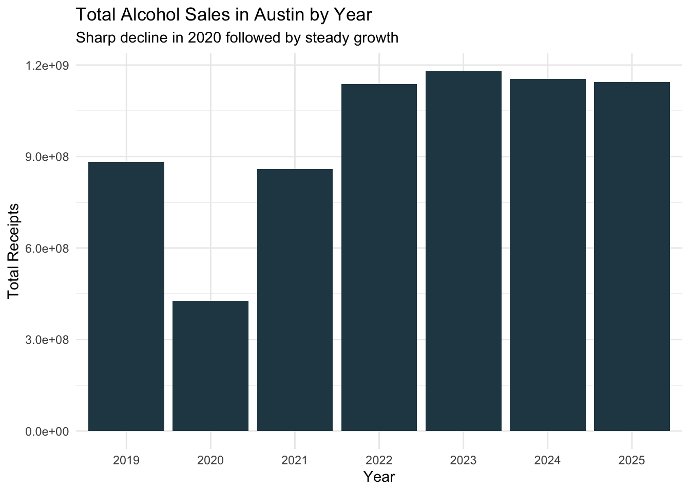
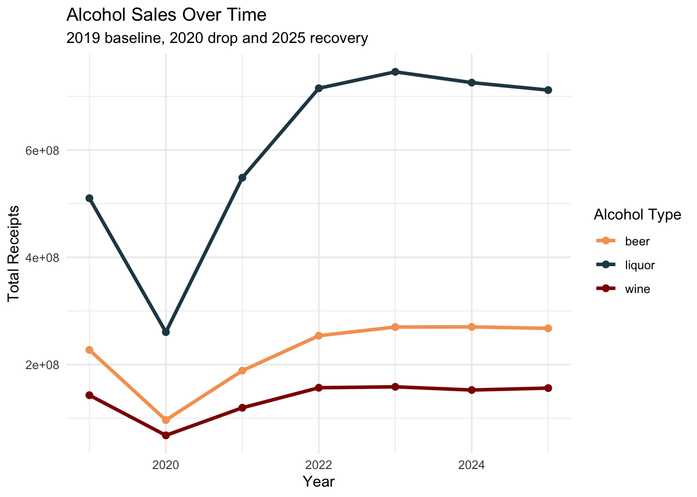
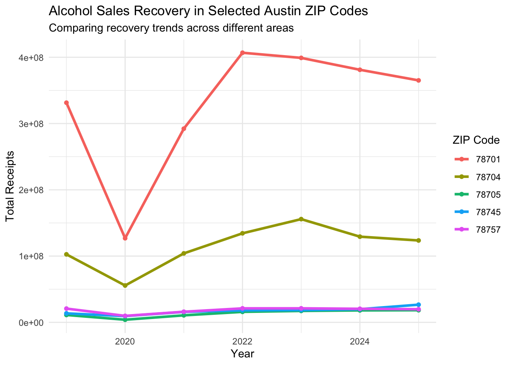

library(tidyverse)
library(janitor)
library(lubridate)
library(readr)Data Analysis
Goal of this notebook
This notebook analyzes alcohol sales trends in Austin after COVID-19, specifically looking at recovery patterns across locations and drink types.
Setup
Setting up the libraries.
Import
Importing the data.
bev_clean <- read_rds("data-processed/bev_clean.rds")
bev_clean |> glimpse()Rows: 107,528
Columns: 13
$ taxpayer_number <dbl> 32074602080, 32058372064, 32039685030, 32060904094…
$ location_number <dbl> 2, 1, 1, 1, 2, 1, 1, 1, 2, 1, 1, 1, 1, 1, 1, 1, 6,…
$ location_name <chr> "FIG ITALIAN KITCHEN & BAR", "EL BORREGO DE ORO #2…
$ location_address <chr> "3403 S LAMAR BLVD", "3900 S CONGRESS AVE", "600 W…
$ location_city <chr> "AUSTIN", "AUSTIN", "AUSTIN", "AUSTIN", "AUSTIN", …
$ location_zip <chr> "78704", "78704", "78701", "78701", "78757", "7870…
$ obligation_end_date <chr> "02/28/2025", "08/31/2019", "08/31/2019", "01/31/2…
$ beer_receipts <dbl> 1693, 3719, 36461, 3195, 40985, 2236, 33655, 52123…
$ wine_receipts <dbl> 20051, 0, 1979, 34610, 955, 46, 572, 1252, 23573, …
$ liquor_receipts <dbl> 22484, 3324, 57536, 35612, 23758, 21700, 31245, 10…
$ total_receipts <dbl> 44228, 7043, 95976, 74145, 65698, 23982, 65472, 15…
$ date <date> 2025-02-28, 2019-08-31, 2019-08-31, 2020-01-31, 2…
$ year <dbl> 2025, 2019, 2019, 2020, 2022, 2024, 2019, 2019, 20…Overall sales trend over time
Exploring how total alcohol sales in Austin changed over time, specifically before and after COVID-19.
annual_sales <- bev_clean |>
group_by(year) |>
summarize(
total_sales = sum(total_receipts, na.rm = TRUE)
) |>
arrange(year)
annual_salesData Takeaway: Alcohol sales in Austin dropped sharply during the COVID-19 pandemic, falling from about $883 million in 2019 to $426 million in 2020, a decline of more than half. Sales rebounded in 2021 to roughly $859 million, nearly returning to pre-pandemic levels. In the years that followed, total sales continued to grow, surpassing pre-COVID figures and reaching about $1.14 billion in 2025, the highest in the dataset.
Plotting the alcohol sales over time.
ggplot(
annual_sales,
aes(x = factor(year), y = total_sales)
) +
geom_col(fill = "#264653") +
labs(
title = "Total Alcohol Sales in Austin by Year",
subtitle = "Sharp decline in 2020 followed by steady growth",
x = "Year",
y = "Total Receipts"
) +
theme_minimal()
Monthly trend around COVID
Comparing monthly revenue trends before, during and after the pandemic.
monthly_sales <- bev_clean |>
group_by(year, month = month(date)) |>
summarize(
total_sales = sum(total_receipts, na.rm = TRUE)
) |>
arrange(year, month)`summarise()` has grouped output by 'year'. You can override using the
`.groups` argument.monthly_salesData Takeaway: Monthly alcohol sales in Austin followed a stable pattern in 2019, ranging from about $60 million to $89 million per month. In 2020, sales dropped sharply beginning in March, falling to just around $2.7 million in April, the lowest point in the dataset. Sales gradually recovered throughout the year and returned to more typical levels by late 2020. By 2021 and 2022, monthly sales had fully rebounded, with the highest months reaching over $100 million, and remained strong through 2025.
Alcohol sales by type over time
Comparison of beer, wine, and liquor sales using 2019 as a baseline before, 2020 as sales drop baseline and 2025 as the recovery baseline.
drink_trends <- bev_clean |>
group_by(year) |>
summarize(
beer = sum(beer_receipts, na.rm = TRUE),
wine = sum(wine_receipts, na.rm = TRUE),
liquor = sum(liquor_receipts, na.rm = TRUE)
)
drink_trendsData Takeaway: All three alcohols dropped sharply in 2020, but recovered by 2021 and continued to grow through 2025. Beer and liquor showed the strongest post-COVID growth, while wine remained the smallest and most stable category over time.
Plotting the comparison of beer, wine and liquor sales.
drink_plot <- drink_trends |>
pivot_longer(
cols = c(beer, wine, liquor),
names_to = "type",
values_to = "sales"
)
ggplot(
drink_plot,
aes(x = year, y = sales)
) +
geom_line(aes(color = type), linewidth = 1.2) +
geom_point(aes(color = type), size = 2) +
scale_color_manual(values = c(
"beer" = "#f4a261",
"wine" = "#8d0801",
"liquor" = "#264653"
)) +
labs(
title = "Alcohol Sales Over Time",
subtitle = "2019 baseline, 2020 drop and 2025 recovery",
x = "Year", y = "Total Receipts",
color = "Alcohol Type"
) +
theme_minimal()
Data Takeaway: Liquor consistently generated the highest sales across all years and contributed to much of the post-pandemic growth. Beer followed a similar recovery pattern at lower levels, while wine remained the smallest category throughout and showed the least variation over time.
Alcohol sales by ZIP code over time
Getting total alcohol sales by ZIP code and year.
zip_year <- bev_clean |>
filter(
location_zip != 78713,
location_zip != 78774
) |>
group_by(location_zip, year) |>
summarize(
total_sales = sum(total_receipts, na.rm = TRUE)
)`summarise()` has grouped output by 'location_zip'. You can override using the
`.groups` argument.zip_yearPlotting the alcohol sales from 2019-2025 for select zip codes.
selected_zips <- zip_year |>
filter(location_zip %in% c(78701, 78704, 78705, 78745, 78757))
ggplot(
selected_zips,
aes(x = year, y = total_sales, color = factor(location_zip))
) +
geom_line(linewidth = 1.2) +
geom_point() +
labs(
title = "Alcohol Sales Recovery in Selected Austin ZIP Codes",
subtitle = "Comparing recovery trends across different areas",
x = "Year", y = "Total Receipts",
color = "ZIP Code"
) +
theme_minimal()
Data Takeaway: Alcohol sales fell sharply across all ZIP codes in 2020, with 78701 experiencing the largest drop. It also showed the strongest rebound, peaking around 2022 before gradually declining in following years. 78704 followed a similar but more moderate recovery pattern. The remaining ZIP codes (78705, 78745, 78757) had smaller declines and steadier growth, with relatively stable trends through 2025.
Datawrapper: https://www.datawrapper.de/_/1JZro/
COVID-19 impact by ZIP code
Recovery comparison by ZIP code, using 2019 as a baseline before, 2020 as sales drop baseline and 2025 as the recovery baseline.
zip_summary <- zip_year |>
group_by(location_zip) |>
summarize(
sales_2019 = total_sales[year == 2019],
sales_2020 = total_sales[year == 2020],
sales_2025 = total_sales[year == 2025]
) |>
filter(!is.na(sales_2019), sales_2019 > 0) |>
mutate(
covid_drop = sales_2020 / sales_2019,
recovery_2025 = sales_2025 / sales_2019
)
zip_summary |>
arrange(covid_drop)Data Takeaway: Alcohol sales recovery after COVID-19 varied across Austin-area ZIP codes. Most areas exceeded their 2019 baseline by 2025, but the degree of recovery was uneven across the city. Downtown and core ZIP codes such as 78701 experienced a sharp decline in 2020 and a slower rebound, reaching only about 1.1 times their 2019 sales level by 2025 after the initial drop. In contrast, several suburban and growth-area ZIP codes saw much stronger increases, including 78702, which more than doubled its pre-pandemic sales, along with strong increases in ZIP codes like 78719 and 78731.
A smaller group of ZIP codes, including 78757, 78728 and 78750, remained slightly below or only near their pre-COVID levels by 2025, suggesting slower long-term recovery in parts of North and Northwest Austin. The data shows central Austin stabilizing at more moderate growth while several suburban and emerging areas experienced stronger post-pandemic expansion.
Establishment recovery
Seeing which establishments recovered the best.
top_locations <- bev_clean |>
mutate(location_id = paste(location_name, location_address)) |>
group_by(location_id, location_name, location_address, year) |>
summarize(
total_sales = sum(total_receipts, na.rm = TRUE),
.groups = "drop"
)
location_summary <- top_locations |>
filter(year %in% c(2019, 2020, 2025)) |>
pivot_wider(
names_from = year,
values_from = total_sales,
names_prefix = "sales_"
) |>
filter(!is.na(sales_2019), sales_2019 > 0) |>
mutate(
recovery_2025 = sales_2025 / sales_2019,
covid_drop = sales_2020 / sales_2019
)
location_summary |>
arrange(desc(recovery_2025)) |>
head(10)Data Takeaway: The top-performing establishments in terms of recovery exceeded their 2019 sales by 2025, with several locations showing exponential growth rather than just recovery. A few businesses, such as Red Rose and Maravilla at the Domain, started from very low reported 2019 sales, which inflates their recovery ratios, but even established venues like Proper Hotel and Mala Vida posted substantial gains well above pre-pandemic levels.
While most locations experienced a drop or disruption in 2020, the overall pattern shows that high-growth establishments not only rebounded but significantly expanded their sales in the years following, indicating strong post-pandemic demand and possible business expansion over time.
Summarize yearly totals and location counts
Summarizing total sales and number of reporting locations each year.
year_summary <- bev_clean |>
group_by(year) |>
summarize(
total_sales = sum(total_receipts, na.rm = TRUE),
num_locations = n_distinct(paste(location_name, location_address))
)
year_summaryData Takeaway: As the number of locations steadily increased each year, total alcohol sales also rose after the 2020 drop, suggesting a positive relationship between market growth and overall sales. However, sales began to level off after 2023 even as locations continued to increase, indicating that growth in new establishments did not translate into the same pace of sales growth.
New vs existing establishments
Identifying when establishments first appear in the dataset to understand whether newer locations are contributing to growth.
location_first_year <- bev_clean |>
group_by(location_name, location_address) |>
summarize(
first_year = min(year)
)`summarise()` has grouped output by 'location_name'. You can override using the
`.groups` argument.new_locations_by_year <- location_first_year |>
ungroup() |>
count(first_year, name = "num_new_locations")
new_locations_by_yearData Takeaway: Most establishments in the dataset were already operating in 2019, but there has been a steady increase in new locations every year since 2020, with new openings accelerating through 2025. This aligns with earlier takeaways showing that while total sales recovered quickly after the pandemic, the continued growth in later years is increasingly driven by new establishments entering the market rather than just existing businesses bouncing back.
Acknowledgement of outside help: dyplyr website explained usage of n_distinct